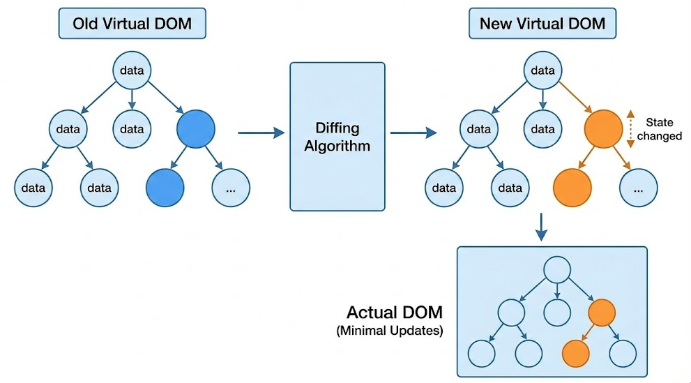
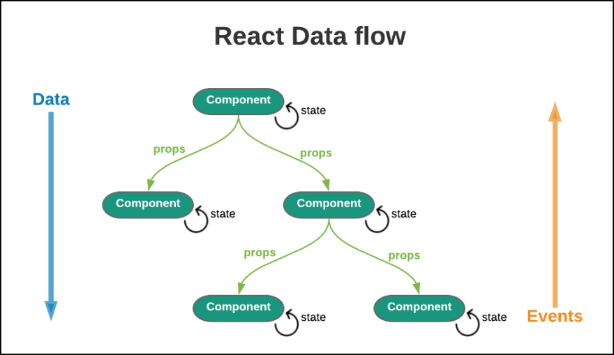

React 기반 컴포넌트 구조
React란?
React는 사용자 인터페이스(UI)를 구축하기 위한 JavaScript 라이브러리입니다.
- 컴포넌트 기반 UI 구조
- SPA(Single Page Application) 개발에 적합
- Virtual DOM을 통한 빠른 렌더링
- 모듈화된 UI 구성
- 다른 프레임워크나 프로젝트에 쉽게 통합 가능
라이브러리와 프레임워크의 차이
라이브러리와 프레임워크는 제어 흐름의 주도권에 따라 구분됩니다.
- 프레임워크 : 제어 흐름을 프레임워크가 가지고 있으며 정해진 규칙을 따라야 함
- 라이브러리 : 애플리케이션의 흐름을 개발자가 직접 제어함
React는 개발자가 흐름을 제어하는 라이브러리입니다.
Virtual DOM
Virtual DOM은 실제 DOM의 가벼운 복사본입니다.
- UI 변경 사항을 Virtual DOM에서 먼저 계산
- diffing 알고리즘을 통해 변경된 부분만 찾음
- 최소한의 DOM 조작으로 UI 업데이트 수행
이를 통해 대규모 애플리케이션에서도 효율적인 렌더링이 가능합니다.

Virtual DOM diffing 과정
State와 Props
React 컴포넌트에서 데이터를 관리하는 두 가지 핵심 개념입니다.
State
- 컴포넌트 내부에서 관리되는 동적 데이터
- state가 변경되면 컴포넌트가 다시 렌더링됨
- state는 해당 컴포넌트 내부에서만 변경 가능
Props
- 부모 컴포넌트 → 자식 컴포넌트로 전달되는 데이터
- 읽기 전용(Read-only)
- 자식 컴포넌트에서 변경할 수 없음
React 생명주기
React 컴포넌트는 다음 세 가지 생명주기를 가집니다.
- Mounting : 컴포넌트가 처음 DOM에 생성되는 단계
- Updating : state나 props가 변경되어 다시 렌더링되는 단계
- Unmounting : 컴포넌트가 DOM에서 제거되는 단계
함수형 컴포넌트에서는 Hook을 사용하여 생명주기와 유사한 동작을 구현합니다.
React 상태 관리
React는 기본적으로 부모 → 자식 방향의 단방향 데이터 흐름을 사용합니다.
컴포넌트 트리가 깊어질 경우 다음 문제가 발생할 수 있습니다.
- Props drilling
- 데이터 흐름 파악 어려움
- 유지보수 어려움
이 문제를 해결하기 위해 다음과 같은 상태 관리 도구가 사용됩니다.
- Redux
- Zustand
- Recoil
- Context API

React 단방향 데이터 흐름 (Parent → Child)
라우팅
라우팅은 URL에 따라 다른 페이지를 보여주는 기능입니다.
React 자체에는 라우팅 기능이 없기 때문에 react-router-dom 라이브러리를 사용합니다.
npm install react-router-dom
Flux 패턴
Flux는 React 애플리케이션의 데이터 흐름을 관리하기 위한 아키텍처입니다.
User Action ↓ Action ↓ Dispatcher ↓ Store ↓ View
이 구조는 단방향 데이터 흐름을 유지합니다.
JSX
JSX는 JavaScript의 확장 문법으로 JavaScript 코드 안에서 HTML과 유사한 구조로 UI를 작성할 수 있게 해줍니다.
JSX 코드는 브라우저에서 실행되기 전에 Babel을 통해 일반 JavaScript 코드로 변환됩니다.
SPA (Single Page Application)
SPA는 하나의 HTML 페이지에서 동적으로 콘텐츠를 업데이트하는 방식입니다.
- 초기 로딩 이후 페이지 전체 새로고침 없음
- 클라이언트 라우팅 사용
- 빠른 사용자 경험 제공
React Hooks
React Hooks는 함수형 컴포넌트에서 상태와 생명주기 기능을 사용할 수 있게 해주는 기능입니다.
- useState
- useEffect
- useRef
- useMemo
- useCallback
- useContext
useRef
- DOM 요소 직접 참조
- 리렌더링 없이 값 유지
- 포커스 관리
- 애니메이션 제어
- 서드파티 DOM 라이브러리 사용
메모이제이션
- React.memo
- useMemo
- useCallback
useMemo vs useCallback
- useMemo : 값 메모이제이션
- useCallback : 함수 메모이제이션
useState와 useEffect
useState
- 컴포넌트 내부 상태 저장
- 값 변경 시 컴포넌트 재렌더링
useEffect
- 렌더링 이후 실행되는 로직 처리
- API 요청
- 이벤트 등록
- 타이머 관리
정리
React는 컴포넌트 기반 구조와 Virtual DOM을 통해 대규모 UI 애플리케이션을 효율적으로 개발할 수 있게 해주는 라이브러리입니다.
또한 Hooks, 상태 관리 라이브러리, 다양한 스타일링 방식과 결합하여 현대적인 프론트엔드 개발 환경을 구성할 수 있습니다.